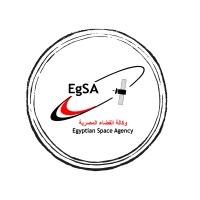

Egyptian Space Agency (EgSA)
The Egyptian Space Agency (EgSA) is Egypt's national space organization, established to develop and manage the country's space activities. It operates under the supervision of the Egyptian government and is headquartered in Cairo.
Overview
EgSA focuses on satellite development, Earth observation, space research, and the application of space technology for sustainable development. The agency aims to strengthen Egypt's technological independence and support national economic growth.
Key Programs
- Earth Observation Satellites: Used for agriculture, urban planning, water resource management, and environmental monitoring
- Remote Sensing: Supports disaster management and climate analysis
- Satellite Manufacturing: Development of domestic satellite production capabilities
Mission Portfolio
Egypt has launched several satellites, including the EgyptSat and NARSS missions, aimed at improving mapping, land use analysis, and national infrastructure planning. These missions contribute to both civil and scientific applications.
Future Direction
The Egyptian Space Agency plans to expand satellite constellations, enhance local manufacturing, and increase cooperation with international space agencies. Long-term goals include boosting research, education, and Africa-wide collaboration in space technology.